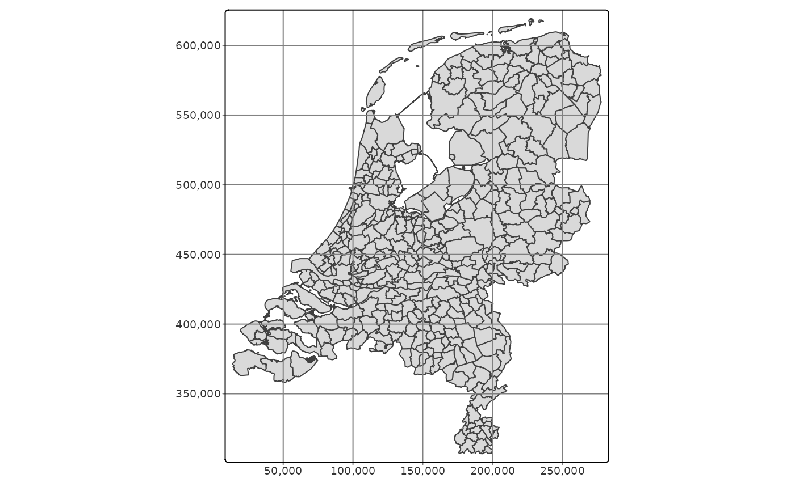
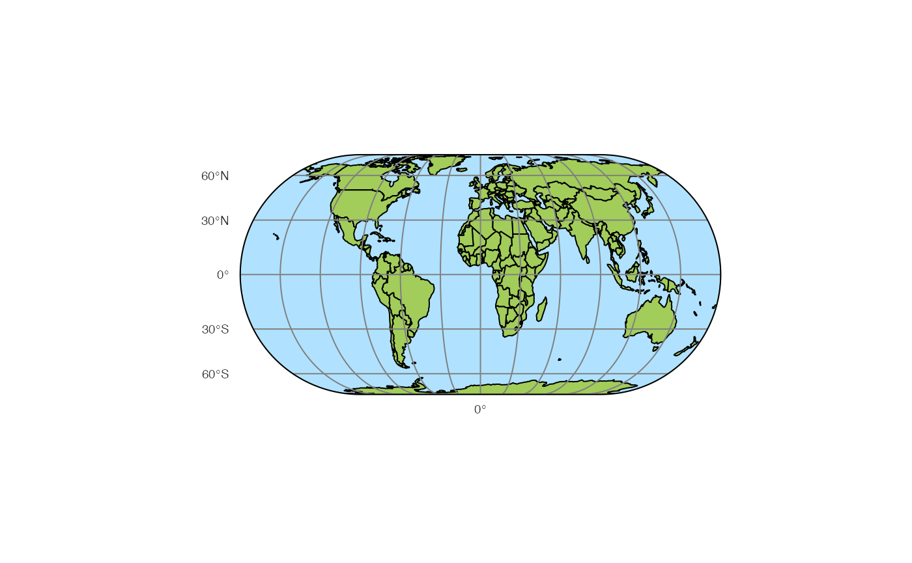

Creates a tmap-element that draws coordinate grid lines. It serves as a layer that can be drawn anywhere between other layers. By default, tm_grid draws horizontal and vertical lines acording to the coordinate system of the (master) shape object. Latitude and longitude graticules are drawn with tm_graticules.
tm_grid(
x = NA,
y = NA,
n.x = NA,
n.y = NA,
projection = NA,
col = NA,
lwd = 1,
alpha = NA,
labels.show = TRUE,
labels.size = 0.6,
labels.col = NA,
labels.rot = c(0, 0),
labels.format = list(big.mark = ","),
labels.cardinal = FALSE,
labels.margin.x = 0,
labels.margin.y = 0,
labels.space.x = NA,
labels.space.y = NA,
labels.inside.frame = FALSE,
ticks = labels.show & !labels.inside.frame,
lines = TRUE,
ndiscr = 100,
zindex = NA
)
tm_graticules(
x = NA,
y = NA,
n.x = NA,
n.y = NA,
projection = 4326,
labels.format = list(suffix = intToUtf8(176)),
labels.cardinal = TRUE,
...
)| x | x coordinates for vertical grid lines. If |
|---|---|
| y | y coordinates for horizontal grid lines. If |
| n.x | preferred number of grid lines for the x axis. For the labels, a |
| n.y | preferred number of grid lines for the y axis. For the labels, a |
| projection | projection character. If specified, the grid lines are projected accordingly. Many world maps are projected, but still have latitude longitude (epsg 4326) grid lines. |
| col | color of the grid lines. |
| lwd | line width of the grid lines |
| alpha | alpha transparency of the grid lines. Number between 0 and 1. By default, the alpha transparency of |
| labels.show | show tick labels. Either one value for both |
| labels.size | font size of the tick labels |
| labels.col | font color of the tick labels |
| labels.rot | Rotation angles of the labels. Vector of two values: the first is the rotation angle (in degrees) of the tick labels on the x axis and the second is the rotation angle of the tick labels on the y axis. Only |
| labels.format | list of formatting options for the grid labels. Parameters are:
|
| labels.cardinal | add the four cardinal directions (N, E, S, W) to the labels, instead of using negative coordiantes for west and south (so it assumes that the coordinates are positive in the north-east direction). |
| labels.margin.x | margin between tick labels of x axis and the frame. Note that when |
| labels.margin.y | margin between tick labels of y axis and the frame. Note that when |
| labels.space.x | space that is used for the labels and ticks for the x-axis when |
| labels.space.y | space that is used for the labels and ticks for the y-axis when |
| labels.inside.frame | Show labels inside the frame? By default |
| ticks | If |
| lines | If |
| ndiscr | number of points to discretize a parallel or meridian (only applicable for curved grid lines) |
| zindex | zindex of the pane in view mode. By default, it is set to the layer number plus 400. By default, the tmap layers will therefore be placed in the custom panes |
| ... | arguments passed on to |
current.mode <- tmap_mode("plot")
#> tmap mode set to plotting
data(NLD_muni, World)
tmap_arrange(
qtm(NLD_muni, borders = NULL) + tm_grid(),
qtm(NLD_muni, borders = NULL) + tm_graticules()
)
#> old-style crs object detected; please recreate object with a recent sf::st_crs()
#> old-style crs object detected; please recreate object with a recent sf::st_crs()
#> old-style crs object detected; please recreate object with a recent sf::st_crs()
#> old-style crs object detected; please recreate object with a recent sf::st_crs()
#> old-style crs object detected; please recreate object with a recent sf::st_crs()
#> old-style crs object detected; please recreate object with a recent sf::st_crs()
#> old-style crs object detected; please recreate object with a recent sf::st_crs()
#> old-style crs object detected; please recreate object with a recent sf::st_crs()
#> old-style crs object detected; please recreate object with a recent sf::st_crs()
#> old-style crs object detected; please recreate object with a recent sf::st_crs()
#> old-style crs object detected; please recreate object with a recent sf::st_crs()
#> old-style crs object detected; please recreate object with a recent sf::st_crs()
#> old-style crs object detected; please recreate object with a recent sf::st_crs()
#> old-style crs object detected; please recreate object with a recent sf::st_crs()
#> old-style crs object detected; please recreate object with a recent sf::st_crs()
#> old-style crs object detected; please recreate object with a recent sf::st_crs()
#> old-style crs object detected; please recreate object with a recent sf::st_crs()
#> old-style crs object detected; please recreate object with a recent sf::st_crs()
#> old-style crs object detected; please recreate object with a recent sf::st_crs()
#> old-style crs object detected; please recreate object with a recent sf::st_crs()

qtm(World, shape.projection = "+proj=robin", style = "natural") +
tm_graticules(ticks = FALSE) +
tm_layout(frame=FALSE)

tmap_mode(current.mode)
#> tmap mode set to plotting